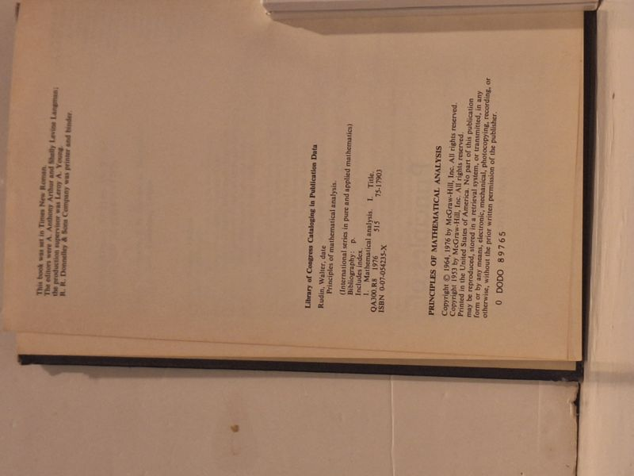

Principles of Mathematical Analysis
Walter Rudin · McGraw-Hill, New York, 1976

C$88 · Good condition
'Principles of Mathematical Analysis' by Walter Rudin (University of Wisconsin-Madison) - the classic real-analysis text universally known as 'Baby Rudin.' Third edition, McGraw-Hill, 1976, in the International Series in Pure and Applied Mathematics. Navy cloth hardcover, issued without dust jacket. Boards show shelf rubbing and edge wear; binding tight and square, text block clean and unmarked. A sound Good working copy of the standard advanced-undergraduate / graduate analysis reference.
Details
- Publisher: McGraw-Hill, New York, 1976
- Binding: Hardcover
- Edition: Third Edition (1976)
- Condition: Good
- ISBN: 9780070542358
- Category: Mathematics